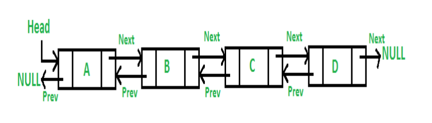

LinkedList
Una LinkedList en Java es una implementación de lista doblemente enlazada. Admite duplicados.
Cada elemento de la lista almacena el enlace real al siguiente elemento de la lista así como también el valor real que se desea almacenar.
LinkedList no es un array, sino una cola de dos extremos de elementos conectados entre sí. El primer elemento apunta al segundo, que apunta al tercero, y así sucesivamente. Internamente, LinkedList se implementa utilizando la estructura de datos de lista doblemente enlazada. La principal diferencia entre una lista enlazada normal y una lista doblemente enlazada es que una lista doblemente enlazada contiene un puntero adicional, normalmente llamado puntero anterior, junto con el puntero siguiente y los datos que están en la lista enlazada individualmente.

ArrayList contiene un único array para el almacenamiento de datos. LinkedList necesita una estructura de datos personalizada. Esta estructura de datos personalizada es conocida como Nodo. Es una pequeña clase interna que sirve como envoltorio para cada elemento.
El primer puntero conocido como head, apunta al primer nodo y se actualiza cada vez que se inserta un nuevo nodo al principio. El puntero que apunta al último nodo es conocido como tail y también se actualiza cada vez que se agrega un nuevo elemento al final.
Crear y añadir ítems en una LinkedList
LinkedList<String> lugares = new LinkedList<String>();
lugares.add("Roma");
lugares.add("París");
lugares.add("Amsterdam");
lugares.add("Toronto");
lugares.add("Miami");
Iterar una LinkedList
Para iterar una lista vamos a usar el concepto de iterador. Un iterador es una forma de acceder a cada uno de los elementos de una lista, arrayList, linkedlist, etc. Es el equivalente a un bucle for que hemos estado usando hasta ahora.
public static void printList(LinkedList<String> lugares) {
Iterator<String> it = lugares.iterator();
while (it.hasNext()) {
System.out.println("Nodo: " + it.next());
}
System.out.println("-----");
}
i.next(): primero devuelve el nodo actual y luego se mueve al siguiente elemento.
Hasta que no usamos .next() no se sitúa en el primer nodo.
La primera línea de código solo es para montar y establecer el iterador.
Insertar elementos en orden
Para insertar elementos en un orden específico se usa un ListIterator ya que proporcionar mayor flexibilidad y está creado para situaciones como esa. Te permite volver a los elementos anteriores.
private static boolean addInOrder(LinkedList<String> lugares, String newItem) {
ListIterator<String> it = lugares.listIterator();
while (it.hasNext()) {
int comparacion = it.next().compareTo(newItem);
if (comparacion == 0) {
//no queremos añadir porque no queremos tener duplicados
System.out.println("el lugar " + newItem + " ya está incluido");
return false;
} else if (comparacion > 0) { //newItem es más pequeño
it.previous();
it.add(newItem);
return true;
}
}
it.add(newItem);
return true;
}
Ejemplo de clase de Visitar Lugares
Utilizamos un list iterator para ir hacia adelante y hacia atrás.
public static void visitarLugar(LinkedList<String> lugares) {
Scanner scanner = new Scanner(System.in);
boolean continuar = true;
ListIterator<String> it = lugares.listIterator();
if (lugares.isEmpty()) {
System.out.println("No hay lugares visitados");
return;
} else {
System.out.println("Visitando " + it.next());
imprimirMenu();
}
boolean haciaAdelante = true;
while(continuar) {
int opcion = scanner.nextInt();
scanner.nextLine();
switch (opcion) {
case 0:
System.out.println("Se acabaron las vacaciones");
continuar = false;
break;
case 1:
if (!haciaAdelante) {
if (it.hasNext())
it.next();
haciaAdelante = true;
}
if (it.hasNext()) {
System.out.println("Visitando " + it.next());
} else {
System.out.println("Ya no hay más ciudades");
haciaAdelante = false;
}
break;
case 2:
if(haciaAdelante) {
if (it.hasPrevious())
it.previous();
haciaAdelante = false;
}
if (it.hasPrevious()) {
System.out.println("Visitando " + it.previous());
} else {
System.out.println("Primera ciudad");
haciaAdelante = true;
}
break;
case 3:
imprimirMenu();
break;
}
}
}
public static void imprimirMenu() {
System.out.println("0 - Para salir\n" +
"1 - para ir a la siguiente ciudad\n" +
"2 - para ir a la ciudad anterior\n" +
"3 - imprimir el menú");
}